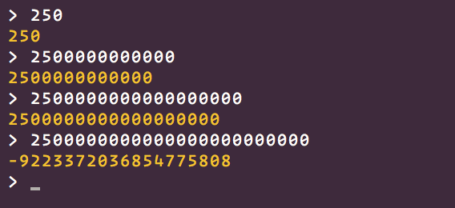
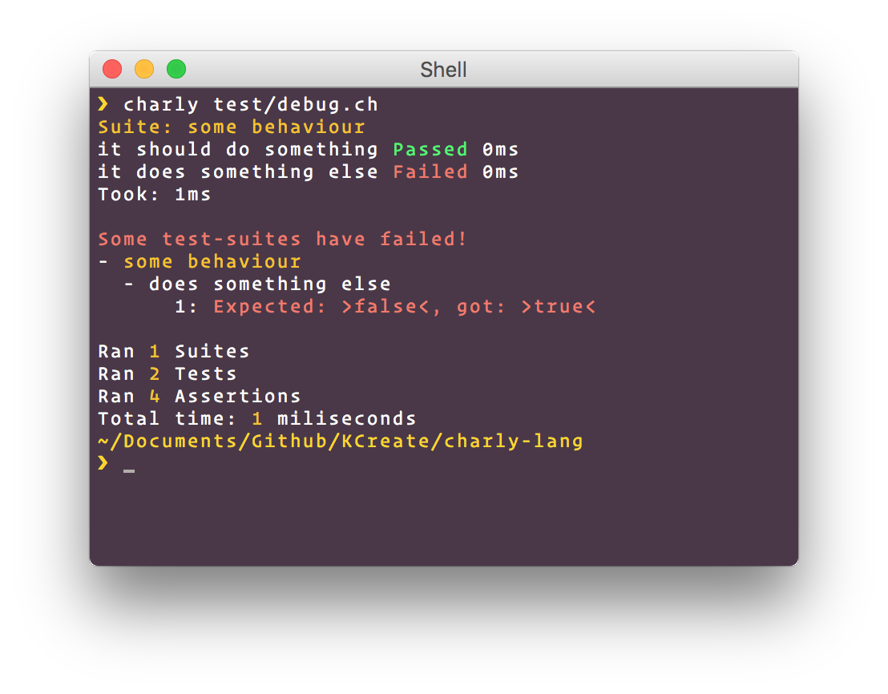

Charly Language Guide
Version 0.0.1
Your syntax files need to be encoded in UTF-8.
Comments
Comments start with the sharp # character. Only one-line comments are currently supported.
# This is a commentVariables
Variables are defined via the let keyword. If you try to access a variable that wasn't initialized before, a runtime exception is thrown.
let myVar = 25
let myOtherVariable = 50
myVar + myOtherVariable # 75Constants
Constants are declared the same way as variables. They can't be changed, hence the name constant. You need to initialize them in the declaration.
const myconst # syntax error
const myOtherConst = 25
myOtherConst = 30 # runtime exceptionLiterals
Charly has a total of 10 primitive types. Not all can be constructed directly. For example the TInternalFunction can only be gathered from a call to __internal__method
| Literal | Type |
|---|---|
| 25 | Numeric |
| 25.5 | Numeric |
| "Charly" | String |
| [1, 2, 3] | Array |
| null | Null |
| NAN | Numeric |
| false | Boolean |
| true | Boolean |
| class Box {} | Class |
| func() {} | Function |
| ->() {} | Function |
| { let name = "charly" } | Object |
Null
The Null type can be compared to undefined in javascript or nil in some other languages.
nullBoolean
A Boolean only has two different values: true and false.
true
falseNumeric
All Numeric types inside Charly are Crystal's native Float64 type.
Numeric literals, just like any other expression in the language, can be prefixed with - to negate them.
Underscores can be used to make some numbers more readable:
1_000_000 # better than 1000000Floats are created using the . character.
123_456.456_789A Numeric will silently overflow if you pass the lower or upper limit of Float64. The following REPL session elaborates this:

Operations such as 1 / 0 will result in the NAN value.
String
A String represents an immutable sequence of UTF-8 characters.
It uses Crystal's native String type underneath.
You can create it using " characters.
"hello world"A backslash can be used to denote various special characters inside the string:
"\"" # double quote
"\\" # backslash
"\e" # escape
"\f" # form feed
"\n" # newline
"\r" # carriage return
"\t" # tab
"\v" # vertical tabA string can span multiple lines:
"hello
word" # same as "hello\n world"Array
An Array is a resizeable list of items of any type. It is typically created with an array literal:
[1, 2, 3]
[1, "hello world", ["whats up"]]You can add new items to an array using the push method:
let nums = []
nums.push(0)
nums.push(1)
nums.push(2)
nums # [0, 1, 2]You can concat two arrays together via the + operator:
[1, 2] + [3, 4] # [1, 2, 3, 4]You can compare two arrays using the == operator:
[1, 2, 3, 4] == [1, 2, 3, 4] # true
[1, 2] == [3, 4] # falseObjects
Charly doesn't have special syntax to create objects. Instead it uses something we call Containers.
A Container is basically the scope of a block turned into an Object:
let Box = {
let name = "charly"
let age = 200
}
Box.name # "charly"
Box.age # 200This can be compared to the javascript equivalent of using new Function():
let Box = (new function() {
this.name = "charly"
this.age = 200
})
Box.name // "charly"
Box.age // 200You can access properties of objects via []:
let Box = {
let name = "mybox"
}
Box["name"] # "mybox"Functions
You can define a new function like this:
func foo() {
return "hello world"
}When written inside a block as a top-level-expression, it is automatically rewritten to the following:
let foo = func() {
return "hello world"
}The last expression inside a function is used as it's return value
func foo() {
25
}
foo() # 25You can also do explicit returns
func foo() {
if true {
return true
}
return false
}
foo() # trueIf you only need the function literal, you can use anonymous function literals:
func foo(callback) {
callback(42)
}
foo(func(arg) {
print(arg) # 42
})There is also the lambda syntax, which goes like this:
[1, 2, 3].map(->(num) {
print(num)
})
[1, 2, 3].map(->(num) print(num))Of course you could also pass the print method directly, this would however result in the following:
[1, 2, 3].map(print)
# 1
# 0
# 3
# 2
# 1
# 3
# 3
# 2
# 3Because Array#map passes the value, index and size of the array to the callback, print will write all these values to the console.
When you write a lambda function without parenthesis or curly braces, it will wrap the expression inside a block.
The following:
foo(->25)becomes:
foo(->{ 25 })which in turn get's converted to:
foo(func() {
return 25
})Classes
Classes in Charly can inherit from multiple other classes.
They can have instance methods and properties and also static methods and properties.
Below is an example of a simple Person class.
class Person {
property name
property age
property height
func constructor(name, age, height) {
@name = name
@age = age
@height = height
}
func greet() {
print("My name is " + @name)
print("I am " + @age + " years old")
print("I am " + @height + " cm tall")
}
}
let John = Person("John", 21, 1.85)
John.greet()
# Will print
#
# My name is John
# I am 21 years old
# I am 1.85 cm tallYou define properties via the property keyword followed by an identifier.
To define a static method or property, prefix the property or func keyword with the static keyword.
class Box {
static property count
static func foo() {
"class method"
}
}
Box.count = 0
Box.foo() # "class method"To inherit from other classes, you use the extends keyword.
class Foo {
func foo() {
"foo method"
}
}
class Bar {
func bar() {
"bar method"
}
}
class Baz extends Foo, Bar {
func baz() {
"baz method"
}
}
let myBaz = Baz()
myBaz.foo() # "foo method"
myBaz.bar() # "bar method"
myBaz.baz() # "baz method"Static properties and methods are also copied to the child classes. The values of static properties are copied by value. They are not references.
class Foo {
static property foo
static func what() {
"static what"
}
}
Foo.foo = "test"
class Bar extends Foo {}
Bar.what() # "static what"
Bar.foo # "test"
Foo.foo = "hello world"
Bar.foo # "test"self reference
@test will be rewritten to self.test by the parser automatically.
The self reference always points to the object a method was called on.
let myBox = {
let name;
func foo() {
@name
}
}
myBox.name = "box"
myBox.foo() # "box"If you directly call a method (foo()), self is set to whatever it what in the context where the method is defined. Think of it like Arrow Funtions in JavaScript.
let Box = {
let name = "box"
func foo() {
return func() {
print(self.name)
}
}
}
let method = Box.foo()
method() # "box"Assignments
Assignment is done with the = character.
# assigns to a local variable
local = 1
# assigns to the current self variable
@instance = 2
# The above is simply rewritten to
self.instance = 2Control expressions
All control expressions inside charly behave as if they were normal expressions.
Truthy and falsey values
A truthy value is a value that is considered true for an if and while guard. A falsey value is a value that is considered false in those places.
The only falsey values are false and null. Any other value is truthy.
if statements
The parenthesis around the test expression are optional
if (2 < 5) {
print("Mathematics still works!")
} else {
print("Something's off...")
}
if 2 + 2 == 9 - 7 {
print("Mathematics still works!")
} else {
print("Somethings's off...")
}while statements
The parenthesis around the test expression are optional
while true {
print("and another one")
}
let i = 0
while i < 100 {
print(i)
i += 1
}For simple loops that repeat for a fixed amount of time, you are encouraged to use the Numeric#times method.
5.times(->(i){
print(i)
})You can break inside a while statement.
let i = 0
while true {
if i >= 100 {
break
}
print(i)
i += 1
}Types and methods
The next sections will assume you know what object oriented programming is, as well as the concepts of classes and methods.
Everything is an object
Everything in Charly is an object. Not every type can have an internal state however. Only Object, Class, PrimitiveClass and Array can have an internal state.
When you write 5, the interpreter actually treats it as a primitive. There are no funny castings or object instantiations (inside charly). All values inside charly are boxed in heap memory. When you write 5.times, the interpreter searches for a primitive class called Numeric and checks if it contains a method called times.
This allows the interpreter to reuse the same object for all primitives of the same type.
This principle applies to all language primitives. The primitive class Array for example, specified a method called push which inserts an element into the array.
Method arguments
If a method expects to be called with 2 arguments, you have to pass two. If you pass 1 it throws an exception.
func foo(a, b, c) {
}
foo(1, 2, 3) # okay
foo(1, 2, 3, 4) # also okay
foo(1, 2) # Operators
You can override any operator inside an object. Just define a method with the corresponding name.
class Vector2 {
property x
property y
func constructor(x, y) {
@x = x
@y = y
}
func __plus(other) {
Vector2.new(@x + other.x, @y + other.y)
}
}
v1 = Vector2(1, 2)
v2 = Vector2(3, 4)
v1 + v2 # Vector2(@x=4, @y=6)Overrideable operators are:
-
+=__plus -
-=__minus -
*=__mult -
/=__divd -
%=__mod **=__pow!=__unot-=__uminus<=__less-
>=__greater -
<==__lessequal -
>==__greaterequal -
===__equal -
!=__not
Exceptions
You can throw exceptions from anywhere in the program. Everything is throwable.
func foo(arg) {
if arg < 10 {
throw Exception("arg is smaller than 10")
}
}
foo(5)This will show up in the console as:
test/debug.ch
1. func foo(arg) {
2. if arg < 10 {
-> 3. throw Exception("arg is smaller than 10")
4. }
5. }
at debug.ch:3:5:5
at foo (debug.ch:7:1:3)
Uncaught Object:Exception: arg is smaller than 10
Requiring files
You can include other files using the require method. It accepts a single string argument that serves as the filename.
When including a file, the contents of the export variable is then returned by the require call.
Example:
main.ch
let external = require("./external.ch")
print(external.message) # "hello world"
print(external.foo(1, 2)) # 3external.ch
export = {
let message = "hello world"
func foo(l, r) {
l + r
}
}If you call require on the same file twice, it will result the value returned by the very first call.
main.ch
let external = require("./external.ch")
external.message = "it changed"
let external_second = require("./external.ch")
print(external_second.message) # "it changed"
external == external_second # trueexternal.ch
export = {
let message = "hello world"
}Recursive require call won't be catched or prevented in any way.
Command line arguments and flags
The charly command has the ability to receive flags. A list of these can be obtained by running charly -h in the command line.
You can pass flags via the following format
charly input.ch -f lintArguments which are not flags are passed to the program instead of the interpreter.
charly input.ch hello -f tokens world 25 25 --foo -b
^ ^ ^ ^ ^ ^ ^ ^
| |__| |_____|__|__|_____|
ARGV | |
IFLAGS ARGVYou can access command line arguments and flags via the ARGV and IFLAGS constants. Current environment variables are available via ENV.
charly input.ch hello -f tokens world 25 25 --foo -bARGV # ["hello", "world", 25, 25, "--foo", "-b"]
IFLAGS # ["tokens"]
ENV["TERM"] # xterm-256colorYou can see the license and a list of contributors via the following commands
$ charly --license
The MIT License (MIT)
Copyright (c) 2016 Leonard Schuetz
Permission is hereby granted, free of charge, to any person obtaining a copy
of this software and associated documentation files (the "Software"), to deal
in the Software without restriction, including without limitation the rights
to use, copy, modify, merge, publish, distribute, sublicense, and/or sell
copies of the Software, and to permit persons to whom the Software is
furnished to do so, subject to the following conditions:
The above copyright notice and this permission notice shall be included in
all copies or substantial portions of the Software.
THE SOFTWARE IS PROVIDED "AS IS", WITHOUT WARRANTY OF ANY KIND, EXPRESS OR
IMPLIED, INCLUDING BUT NOT LIMITED TO THE WARRANTIES OF MERCHANTABILITY,
FITNESS FOR A PARTICULAR PURPOSE AND NONINFRINGEMENT. IN NO EVENT SHALL THE
AUTHORS OR COPYRIGHT HOLDERS BE LIABLE FOR ANY CLAIM, DAMAGES OR OTHER
LIABILITY, WHETHER IN AN ACTION OF CONTRACT, TORT OR OTHERWISE, ARISING FROM,
OUT OF OR IN CONNECTION WITH THE SOFTWARE OR THE USE OR OTHER DEALINGS IN
THE SOFTWARE.
# Contributors
- [Leonard Schütz (Author) @KCreate](https://github.com/KCreate)
- ...
Built-in REPL
Charly has a built-in REPL (Read Eval Print Loop) where you can quickly test out new ideas.
You can invoke it by typing charly or charly repl
Here you can write charly statements. Run them by pressing enter.
The REPL provides a few magic variables which are specific to your current REPL session.
-
$This variable always contains the value of the last evaluated expression -
historyThis is an array of all commands you have entered -
contextThis is the top-level context of the REPL.
Extending primitive types
Primitives in Charly can be extended as if they were regular objects. A good example of this is the Numeric#times method. It allows you to write really expressive code like this:
5.times(->{
print("Hello!")
})It is implemented like this:
Numeric.methods.times = func(callback) {
let i = 0
while (i < self) {
callback(i)
i += 1
}
self
}You can add your own methods to primitive classes via the Numeric.methods object.
For arrays you would use Array.methods, for strings String.methods and so on.
Let's define a indent method on strings which takes two arguments, the amount and a filler string.
String.methods.indent = ->(amount, filler) {
@split("\n").map(->(line) {
(value * amount) + line
}).join("\n")
}You can now indent strings via the String#indent method.
"hello\nworld\nwhats\nup".indent(2, "-")
# --hello
# --world
# --whats
# --upUnit-testing
Charly provides a built-in unit-testing library.
const UnitTest = require("unit-test")
const result = UnitTest("myTests").begin(->(describe) {
describe("some behaviour", ->(it) {
it("should do something", ->(assert) {
assert(25 + 25, 50)
assert(true, true)
assert("hello", "hello")
})
it("does something else", ->(assert) {
assert(true, false)
})
})
})Running this file will output the following:

If you have a lot of test cases, you can put them into another file and require them.
main.ch
const UnitTest = require("unit-test")
const result = UnitTest("myTests").begin(->(describe) {
describe("some behaviour", require("./mytest.ch"))
})mytest.ch
export = ->(it) {
it("should do something", ->(assert) {
assert(25 + 25, 50)
assert(true, true)
assert("hello", "hello")
})
it("does something else", ->(assert) {
assert(true, false)
})
}IO
Charly currently has bindings to STDOUT, STDERR and STDIN. Everything IO related will be found inside the io global object.
# Using the IO object
io.stdout.print("hello world") # same as puts in ruby
io.stdout.write("hello world") # same as print in ruby
io.stderr.print("hello world")
io.stderr.write("hello world")
io.stdin.gets("> ", false) # uses the GNU ReadLine library to read a line from STDIN
io.stdin.getc() # Read a single char from STDIN
io.sleep(200) # sleep for 200 miliseconds
io.exit(1) # exit the program with status code 1
io.stackdump() # returns the current scope in a nicely formated table
io.time_ms() # returns the current unix timestamp in miliseconds
io.eval("2 + 2", self) # Execute "2 + 2", using self as the context. This call will return 4
# The prelude contains direct bindings for the following methods:
print()
write()
gets()
getc()
exit()Native extensions written in Crystal
Charly currently has rudimentary support for native extensions written in Crystal.
The way this works is via Crystal files that have to be compiled into the interpreter itself.
You can add your own files like this:
Create a file called
myfile.crinsidesrc/charly/interpreter/internalsInsert the following code:
require "../**"
module Chalry::Internals
charly_api "mymethod", myarg : TString do
return TString.new("You said: " + myarg.value)
end
endRecompile & reinstall the interpreter
Link against the method inside your charly program like this:
const mymethod = __internal__method("mymethod")
print(mymethod("Hello World")) # You said: Hello World- Finished!
Copyright © 2016 - present Leonard Schütz